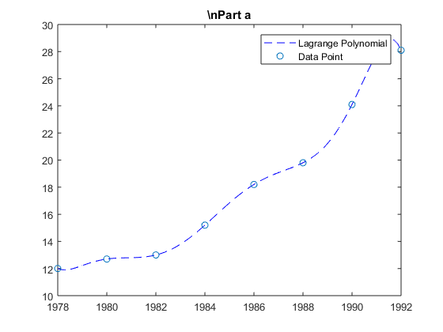
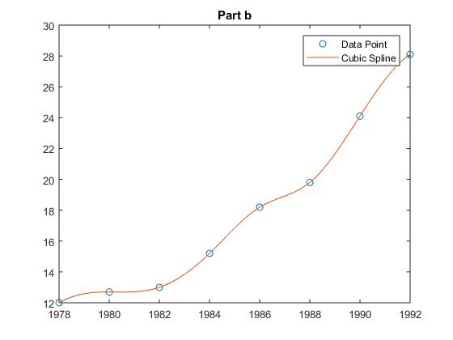
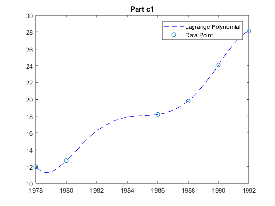
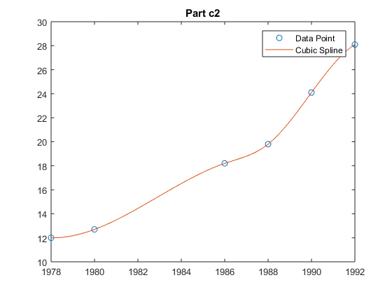

Problem 3
syms t;
fprintf(' # part A\n')
X = [1978:2:1992] - 1976;
Y = [12, 12.7, 13, 15.2, 18.2, 19.8, 24.1, 28.1];
P = Lagrange(X, Y)
XX = linspace(2, 16);
y1 = vpa (subs( P, t, XX));
figure
plot(XX,y1,'b--',X,Y,'o')
xticklabels(1978:2:1992)
legend('Lagrange Polynomial','Data Point')
title('\nPart a')
fprintf('Estimate for 1994 using Lagrange: %f \n', vpa (subs( P, t, 18)));
fprintf('\n # Part B\n\n')
x = [1978:2:1992]; y = [12, 12.7, 13, 15.2, 18.2, 19.8, 24.1, 28.1];
xx = linspace(1978, 1992);
yy = spline(x,y,xx);
figure
plot(x,y,'o',xx,yy)
xticklabels(1978:2:1992)
legend('Data Point','Cubic Spline')
title('Part b')
fprintf('Estimate for 1994 using Cubic Spline: %f \n', spline(x,y,1994));
fprintf('\n # part C\n')
x = [1978:2:1992] - 1976; y = [12, 12.7, 13, 15.2, 18.2, 19.8, 24.1, 28.1];
clear = [3, 4];
clear = sort(clear, 'descend');
for i = 1:length(clear)
x(clear(i)) = [];
y(clear(i)) = [];
end
P = Lagrange(x, y)
XX = linspace(2, 16);
y1 = vpa (subs( P, t, XX));
figure
plot(XX,y1,'b--',x,y,'o')
xticklabels(1978:2:1992)
legend('Lagrange Polynomial','Data Point')
title('Part c1')
fprintf('Estimate for 1982 and 1984 using Lagrange: %f, %f \n', vpa (subs( P, t, 6)), vpa (subs( P, t, 8)));
x = x + 1976;
xx = linspace(1978, 1992);
yy = spline(x,y,xx);
figure
plot(x,y,'o',xx,yy)
xticklabels(1978:2:1992)
legend('Data Point','Cubic Spline')
title('Part c2')
fprintf('Estimate for 1982 and 1984 using Spline: %f, %f \n', spline(x,y,1982), spline(x,y,1984));
function [ LP ] = Lagrange ( X, Y )
t = sym('t');
order = length(X);
A = [];
for i = 1:order
A = [A ; row(X(i), order - 1)];
end
x = A\Y';
T = row (t, order - 1);
LP = T * x;
function [ A ] = row ( x, order )
A = [];
for j = 0:order
A = [A, x^j];
end
end
end
function [ A ] = row ( x, order )
A = [];
for i = 0:order
A = [A, x^i];
end
end
# part A
P =
- (5924735509799193*t^7)/147573952589676412928 + (2719673774979989*t^6)/1152921504606846976 - (8035797835136663*t^5)/144115188075855872 + (6126381055618849*t^4)/9007199254740992 - (5145675324261571*t^3)/1125899906842624 + (4729932874285817*t^2)/281474976710656 - (4348671108957391*t)/140737488355328 + 4771000855260093/140737488355328
Estimate for 1994 using Lagrange: -38.400000
# Part B
Estimate for 1994 using Cubic Spline: 26.440670
# part C
P =
- (485387959838791*t^5)/576460752303423488 + (2810996767416921*t^4)/72057594037927936 - (5941311258413367*t^3)/9007199254740992 + (5601117474061161*t^2)/1125899906842624 - (8609224912669087*t)/562949953421312 + 7703031862648063/281474976710656
Estimate for 1982 and 1984 using Lagrange: 16.233333, 17.880000
Estimate for 1982 and 1984 using Spline: 14.448187, 16.522280
   